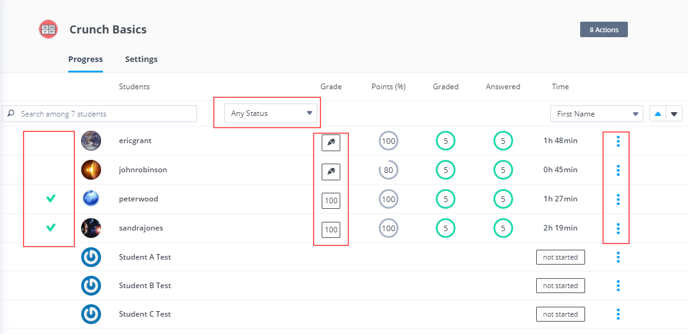
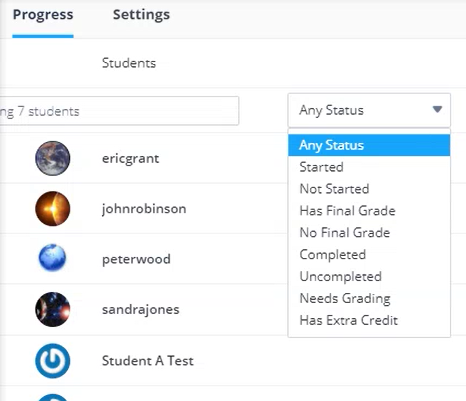
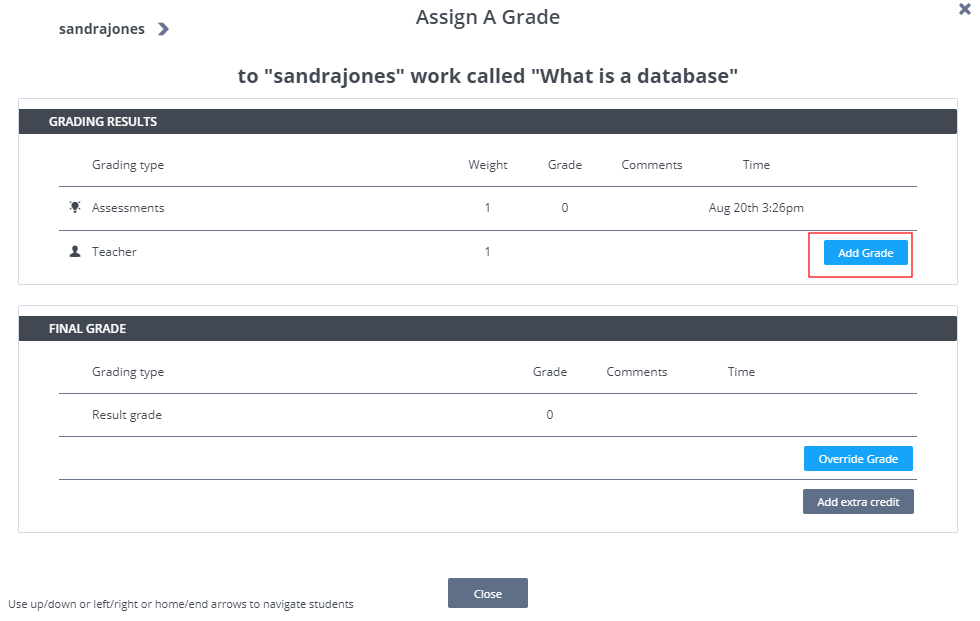
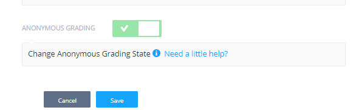

Grading¶
Codio offers the following grading features:
Assign Grade - Manually review student projects and assign a grade.
Grading Moderation - Other instructors review grades already assigned to monitor grading consistency.
Grading Rubric - A two-dimensional grid that provides grading guidance for manually assessing a coding project.
LMS Gradebook Synchronization - Ensures that when grades are released, the data is automatically passed to any LTI enabled LMS platform such as Moodle, Blackboard and Canvas.
Grading process¶
Once students have completed their assignments, they notify the teacher by using the Education > Mark as Completed menu in the IDE. Instructors can also mark the assignment as complete or change the status to incomplete. Follow these steps to view and grade the assignments:
Open the assignment and view the students that have a green check mark to the left of their name. This indicates that they have marked as complete.

Optionally, click the Filter drop-down and choose one of the following options to filter the list of students based on the status of the assignments:

Any Status
Started
Not Started
Has Final Grade
No Final Grade
Completed
Uncompleted
Needs Grading
Click the Options menu and choose Open the Project to start grading the student’s assignment.
Use one of the following methods to assign the grade:
In the IDE, click the Education menu. You must have a student project open in the IDE.
On the Course dashboard, click the Grade icon > Add Grade and complete the fields. You can also add comments.

Override Grade¶
If the students assignment has already been graded, another teacher in the course can click Override Grade to manually change the grade with additional comments.
Anonymous grading¶
If required, anonymous grading can be set for the course so students cannot see the names of the teachers who graded their work. The teacher names are hidden in the shared feedback, project, and dashboard.
To enable anonymous grading, follow these steps:
Open the course and click the Admin tab.
Click Edit Details in the lower portion of the page.

Toggle Anonymous Grading to enable it and then click Save.
Code Commenting¶
You can add comments to the code so that students can see them when they open the file. To comment on the code, follow these steps:
Open the project and then open the file.
Hover over the left-hand side of the gutter bar and click + to open the comment window.
Enter your comments. You can select multiple lines of code, edit, and delete lines of code.

Students can then view the comments from the Education > Code Comments menu. They can also open the file from the comments.